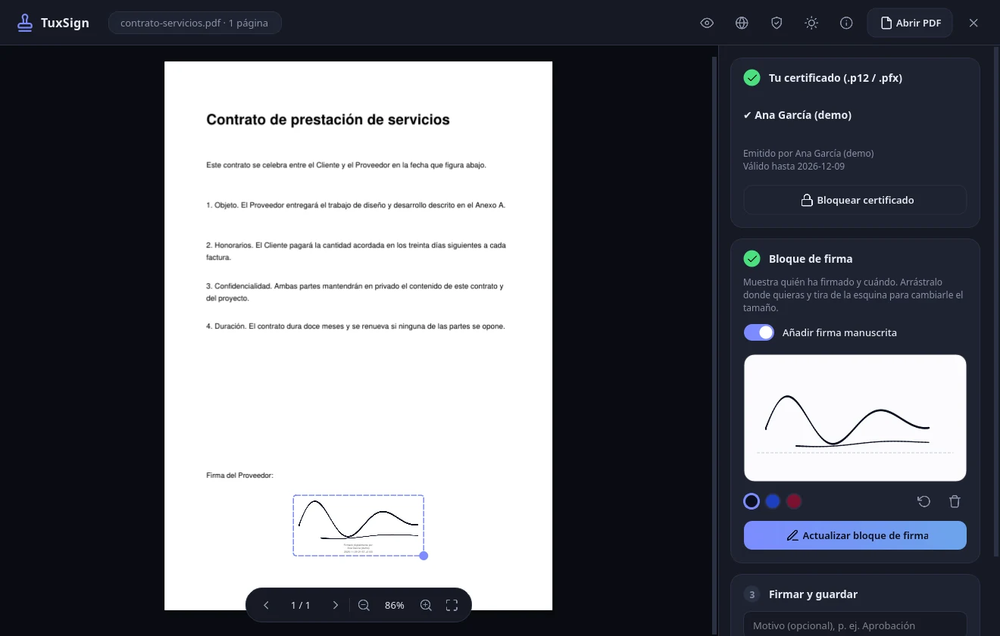
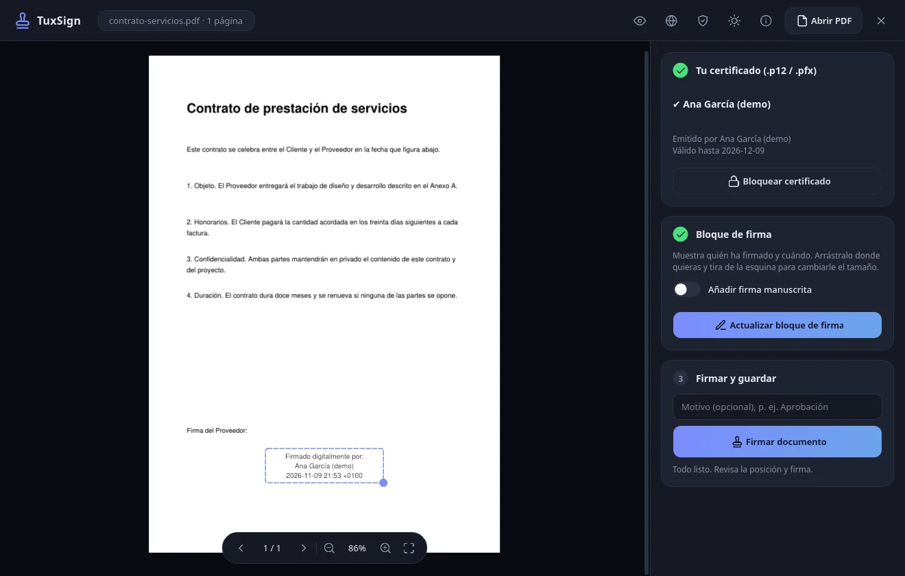

Firma PAdES de verdad
Firma con SHA-256 sobre todo el documento, usando tu certificado .p12 o .pfx. Puedes firmar varias veces y comprobar las firmas que ya trae.
TuxSign firma documentos con tu certificado .p12 y deja el original intacto. Sin nube, sin red y sin telemetría. Tú, tu certificado y tu PDF, y nadie más.
Gratis y de código abierto (MIT). Disponible como Flatpak, paquete Python y binario nativo.

Una herramienta pequeña y cuidada. Se abre rápido, se entiende a la primera y no te pide nada que no necesite.
Firma con SHA-256 sobre todo el documento, usando tu certificado .p12 o .pfx. Puedes firmar varias veces y comprobar las firmas que ya trae.
Un bloque con tu nombre y la fecha que mueves y redimensionas a mano. Si quieres, añade tu firma manuscrita. Viene desactivada.
Zoom suave, páginas, arrastrar y soltar, y tema claro u oscuro. Con animaciones discretas que ayudan en vez de molestar.
Sin conexión a Internet, sin cuentas y sin telemetría. Tu documento y tu certificado no salen de tu ordenador.
El PDF se abre en un proceso sin permisos, el código se comprueba al arrancar y el sistema le prohíbe la red.
Disponible en inglés, español, francés, alemán y portugués. Añadir otro idioma es un cambio pequeño.
Abre el PDF, desbloquea tu certificado, coloca el bloque de firma, ajústalo y firma. Se guarda una copia nueva y el original no se toca.

El bloque con tu nombre y la fecha se arrastra a su sitio y se ajusta de tamaño con la esquina.
No te pedimos que te fíes de nuestra palabra. El código es abierto, hay tests para cada protección y el documento de diseño dice también lo que TuxSign no consigue.
Un filtro del sistema (seccomp y Landlock) le impide abrir conexiones, y el Flatpak ni siquiera tiene red.
El PDF se abre en un proceso aparte, sin acceso a archivos ni a programas. Tu certificado vive en otro proceso distinto.
Al arrancar se comprueba una firma Ed25519 sobre todos los archivos. Si algo ha cambiado, no arranca.
Ignora PYTHONPATH, LD_PRELOAD y otras variables que sirven para colar código ajeno.
Un registro opcional sin nombres ni rutas, que puedes exportar o borrar entero cuando quieras.
Con Flatpak tienes el entorno aislado de serie. Desde el código fuente es ideal si quieres curiosear o contribuir.
Descarga el paquete desde la página de descargas y ejecuta:
Necesitas Python 3.10 o superior y Wayland o X11:
El script prepara el entorno e instala las dependencias fijadas.
Depende de tu certificado y de la normativa de tu país. TuxSign genera una firma PAdES estándar con tu certificado, pero no es una herramienta certificada. Si lo necesitas para algo oficial, consulta qué exige quien lo va a recibir.
No. TuxSign no usa la red: el sistema se lo impide y el paquete Flatpak ni siquiera la tiene. Puedes comprobarlo en el código, que es abierto.
Sí, en los dos. Una excepción: un DISPLAY de X11 por TCP, como el de ssh -X, no funciona porque la aplicación no puede abrir conexiones de red.
Todavía no. Ahora mismo solo admite certificados en archivo .p12 o .pfx. Soportar PKCS#11 sería una buena contribución.
El código es MIT. Los paquetes con binarios incluyen otras librerías con sus licencias, como PyMuPDF (AGPL-3.0) y Qt (LGPL-3.0), que hay que respetar si los redistribuyes.